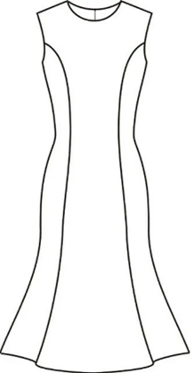
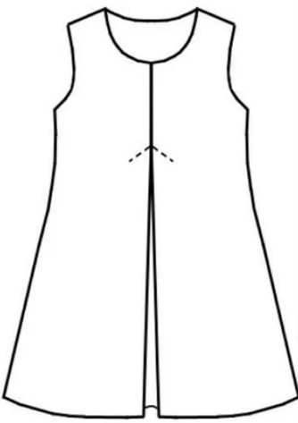
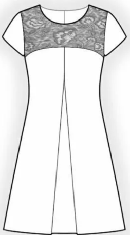
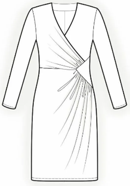
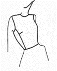
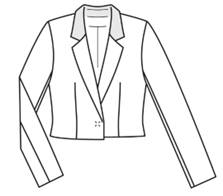

Тема:
Проектирование конструкций плечевых изделий женской одежды
#Конструирование, моделирование и технология изготовления изделий легкой промышленности
Интерактивный тренажер по выполнению заданий
Задание:
Выбрать один правильный ответ:
Выбрать один правильный ответ:
112
10:00
Для создания каких элементов в моделях одежды используется параллельное расширение деталей?
Для создания каких элементов в моделях одежды используется коническое расширение деталей?
Что происходит с нагрудной вытачкой при построении рельефа в данном случае?

Каким образом изменили базовую конструкцию плечевого изделия для создания модельной конструкции платья трапециевидного силуэта?

Что происходит с нагрудной вытачкой при проектировании кокетки в данном изделии?

Какой способ конструктивного моделирования используется для проектирования данного платья?


Куда переведена нагрудная вытачка при выполнении конструктивного моделирования данного женского жакета?

1) Верхняя, отрезная часть деталей изделия, переда, спинки.
2) Резные линии, которые делят основное лекало на части и с помощью которых создается форма изделия, облегающая фигуру.
3) Создание нужной формы участка изделия группой мягких складок.
4) Линии, создающие основную форму деталей, и линии соединяющие составные детали одежды: боковые, передние, талиевые, плечевые швы, швы соединяющие стыки, рукава, вытачки.
5) Конструктивно-декоративный элемент, не проходящий через конец вытачки, позволяющий перевести вытачки в новое положение и придать им новую форму (складки, сборки).
А) Драпировка
Б) Конструктивные
В) Кокетка
Г) Рельефы
Д) Подрез
2) Резные линии, которые делят основное лекало на части и с помощью которых создается форма изделия, облегающая фигуру.
3) Создание нужной формы участка изделия группой мягких складок.
4) Линии, создающие основную форму деталей, и линии соединяющие составные детали одежды: боковые, передние, талиевые, плечевые швы, швы соединяющие стыки, рукава, вытачки.
5) Конструктивно-декоративный элемент, не проходящий через конец вытачки, позволяющий перевести вытачки в новое положение и придать им новую форму (складки, сборки).
А) Драпировка
Б) Конструктивные
В) Кокетка
Г) Рельефы
Д) Подрез
Вводить цифры без пробелов
Что происходит с нагрудной вытачкой, если проектируемая кокетка располагается намного выше конца вытачки?
Вводить цифры без пробелов
Вы набрали 0 баллов
Вернуться на главную страницу